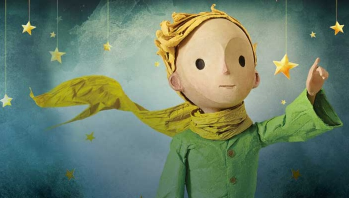
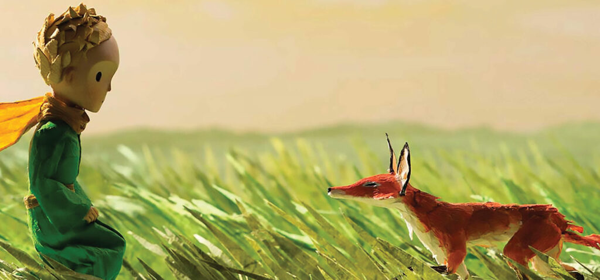

"Érase una vez un principito que vivía en un planeta apenas más grande que él y que tenía necesidad de un amigo…"
"El Principito" es la historia de un pequeño príncipe que deja su asteroide para explorar el universo. A través de sus encuentros con distintos personajes, nos enseña lecciones sobre el amor, la soledad y el significado de la vida. La obra es una reflexión profunda sobre las relaciones humanas, el sentido de la existencia y la importancia de los valores esenciales, como la amistad y la bondad. El autor, Antoine de Saint-Exupéry, nos lleva a cuestionarnos lo que verdaderamente importa, a través de la mirada de un niño que ve el mundo con ojos puros, alejados de las complicaciones de la adultez.
